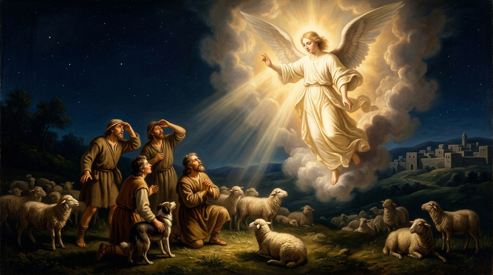

路加福音 第2章 8–20節
從古老的聖經尋求現代生活的智慧
新標點和合本 · 上帝版
這段經文是耶穌降生後，天使向野地牧羊人報喜訊的經典敘事。路加特別強調「卑微者先聽福音」——不是祭司、文士或權貴，而是社會地位低下、常被視為不潔的牧羊人。對熟悉聖經、熱心服事的長老教會兄姐來說，這段提醒我們：上帝的啟示常臨到「在崗位上盡責」的人，並呼召我們以信實行動回應。
夜間按着更次看守羊羣的牧羊人
牧羊人在夜間輪班守夜，忠於日常職責。伯利恆附近的野地是放牧區，牧羊人在當時社會地位低微，常被視為不潔（因與動物接觸、無法常守禮儀潔淨）。上帝卻選擇他們作為第一批聽聞救主降生的人。
在職場、家庭或教會服事中，我們常覺得自己「只是普通人」或「在平凡崗位」。然而，上帝常在我們「按更次看守」——認真做好本分——的時候，賜下特別的遇見。例如：一位夜班護士或清潔工、一位在家照顧家人的兄姐，可能在日常辛勞中經歷上帝的同在與引導。不要輕看「平凡的忠心」。

主的使者與四面照耀的榮光
「主的榮光」使人自然畏懼，因為人與聖潔的上帝相遇時，會意識到自己的有限與不潔。恐懼是真實的屬靈反應。
當我們在禱告、敬拜或突然的處境中感受到上帝的臨在（或良心被光照），常會先有不安或懼怕。這不是壞事，而是提醒我們要謙卑。例如：在忙碌服事後忽然被提醒自己的驕傲，或在困境中經歷「超自然的平安卻伴隨敬畏」。健康的懼怕會引向更深的信靠，而不是逃避。
天使先安慰「不要懼怕」，再宣告「大喜的信息」（福音）——關乎「萬民」（不只以色列），而且「為你們」生了救主（Saviour）、主（Lord）、基督（Messiah）。這是個人化的好消息，也是普世的。
福音不是抽象教義，而是「為你」的。在壓力、焦慮或自卑時，我們常需要先聽見「不要懼怕」。例如：一位在職場被邊緣化的兄姐、或為孩子操心的父母，可以重新領受——救主已為你而生。教會服事中，我們傳福音時也應先幫助人卸下恐懼，再分享「為你」的好消息。
包着布、臥在馬槽裏的嬰孩——謙卑的記號
記號不是華麗宮殿，而是最卑微的馬槽與襁褓。上帝用「出乎意料的平凡」作為確認。
我們常期待「震撼的神蹟」作為上帝同在的證據，但上帝常透過平凡細節印證祂的話。例如：在困境中，一位弟兄姊妹的一句安慰、一次偶然的經文提醒、或家人的溫暖舉動，可能就是「馬槽記號」。服事中，不要輕看「不起眼的回應」——那可能正是上帝的確認。
一大隊天兵同聲讚美
天軍的讚美把焦點從人轉向上帝——榮耀歸上，平安（shalom，整全的福樂）臨到「他所喜悅的人」（那些蒙祂恩典的人）。平安不是沒有衝突，而是與上帝和好後的狀態。
真正的平安來自「榮耀歸上帝」，而不是環境順利。在現代生活中，我們常追求外在平安（經濟、健康、關係），卻忽略內心與上帝的對齊。例如：在家庭衝突或教會意見分歧時，先「榮耀歸上帝」——承認祂的主權——反而能帶來真實的平安。服事時，我們的讚美與感恩，本身就是在地上延續天軍的頌讚。
牧羊人急忙前往尋見救主
天使離開後，牧羊人立刻行動——「彼此說」、「急忙去」、「尋見」。他們沒有停留在「感動」階段，而是用行動驗證並領受。
屬靈經歷若只停在感覺，就容易消散。聽見上帝的話後，要「急忙」回應。例如：讀經或聽道後有感動，就立刻採取具體行動（打電話關心、調整服事優先次序、或向某人分享）。在忙碌現代生活中，「急忙」常被拖延取代——這段提醒我們：信實的回應要及時。
牧羊人成為第一批見證人，主動傳開。聽者「詫異」（希奇、驚訝），顯示福音常出人意料。
真實的遇見必然帶來見證。我們不需要完美口才，只需分享「我所看見、所聽見的」。例如：在職場或社區中，自然分享上帝如何幫助自己度過難關；在教會服事中，鼓勵弟兄姊妹把個人經歷轉化為見證。人們可能先「詫異」，但種子已撒下。
馬利亞把一切事存在心裏，反覆思想
馬利亞的反應是內省與沉思——把經歷「存」在心中，反覆思想（ponder）。這是深層的屬靈操練。
在資訊爆炸、快速回應的時代，我們常立刻發文、分享、或行動，卻少了「存在心裏、反覆思想」。馬利亞提醒我們：有些經歷需要沉澱。例如：重大決定前、服事高潮後、或挫折時，刻意留時間默想與禱告，讓真理更深扎根。這也是長老教會傳統中「安靜在主前」的智慧。
他們「回去」原本的崗位，但生命已被改變——因驗證了上帝的話，就歸榮耀與讚美。經歷沒有讓他們逃離日常，而是帶着更新的心回去。
真正的屬靈高峰，最終要回到日常。我們不必永遠「在山上」，而是把榮耀與讚美帶進職場、家庭、教會服事。例如：參加完培靈會或特會後，回到原來的服事崗位，卻帶着更深的感恩與見證。這才是持續的「現代智慧」——在平凡中活出超凡。
這段經文的核心智慧是：上帝向忠於崗位的卑微人啟示救主，呼召他們以行動回應、以見證傳揚、以沉思深化、並以讚美回到日常。對熱心服事的兄姐而言，這提醒我們：服事的動力不在於「被看見」，而在於「被上帝遇見」後，自然流露的榮耀歸上與平安分享。